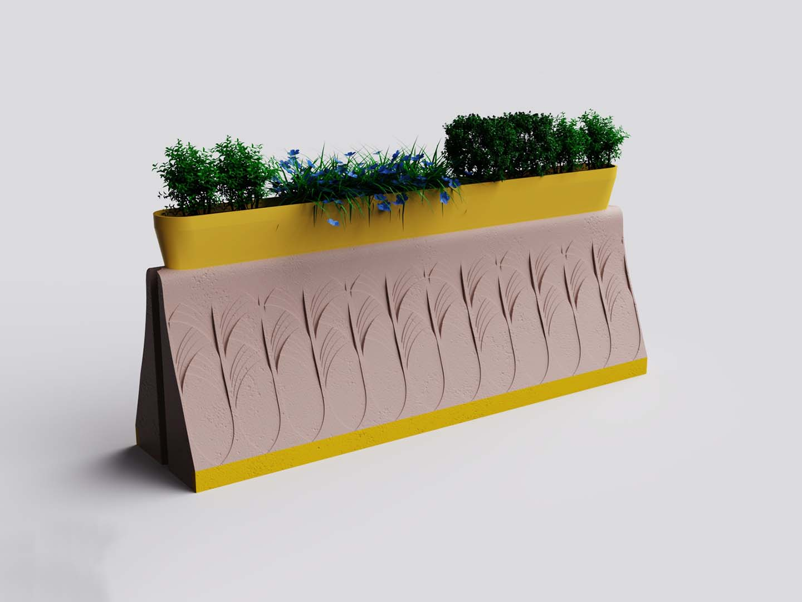
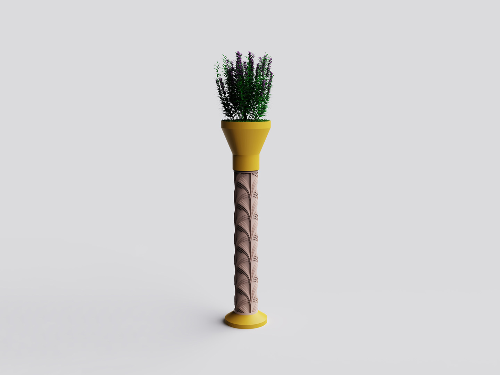
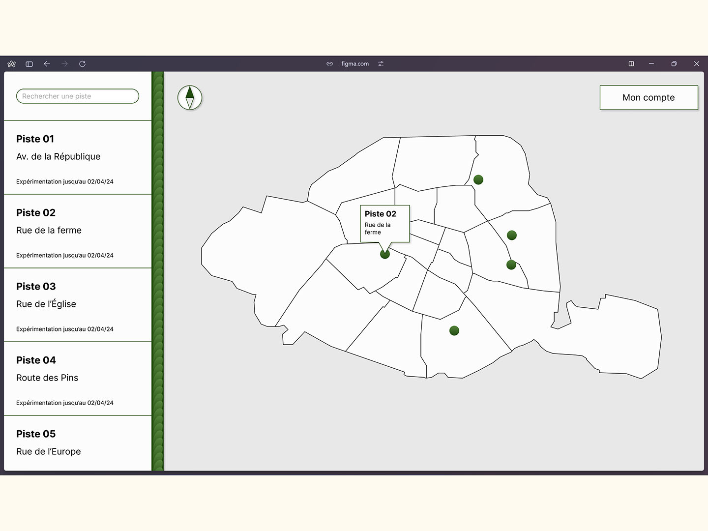
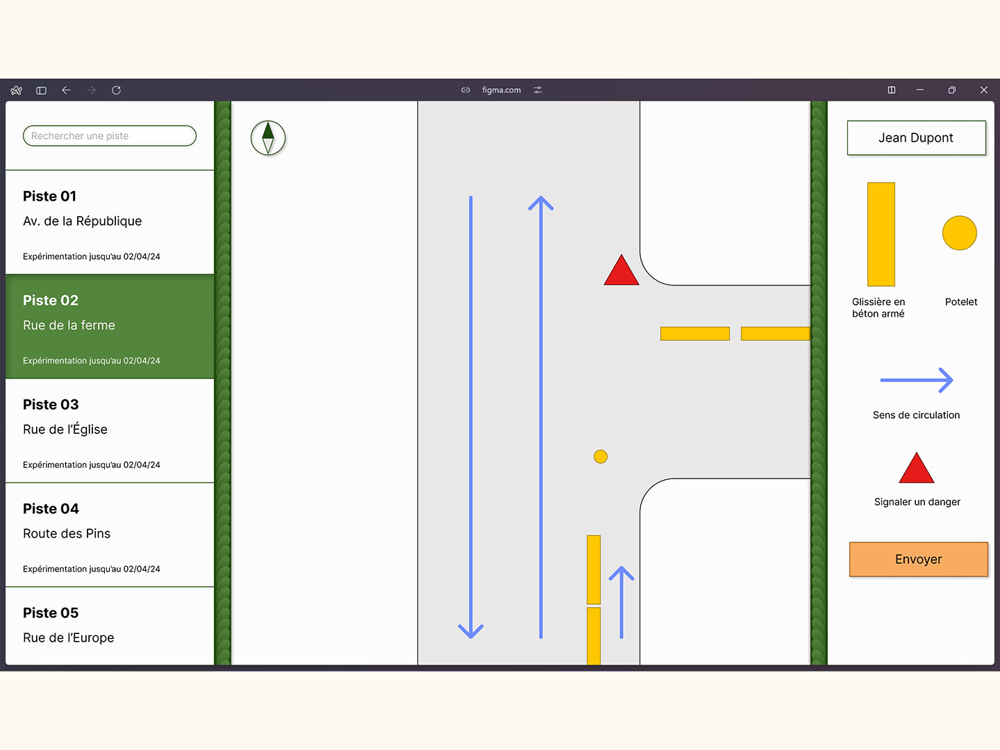

Recherche sur les objets de l'urbanisme transitoire
2023
Projet personnel
Les villes voient leurs rues régulièrement être modifiées par des travaux ou des aménagements temporaires. Ces modifications de l’espace sont le plus souvent créées avec des éléments choisis avant tout pour leur fonction et non pas pour leur esthétique. À l’heure où ces objets se retrouvent de plus en plus dans les rues, ne servant plus seulement à protéger des chantiers mais aussi à préfigurer et tester de nouveaux aménagements, j’ai mené une recherche pour redessiner leur forme tout en gardant ce qui fait leur force. Je me suis d’abord intéressé à la glissière en béton armé (GBA), grosse masse de béton, empêchant les véhicules de franchir sa ligne. J’ai choisi de garder les dimensions standards et sa forme globale qui a été pensée pour stopper les véhicules, sa fonction première. J’ai ajouté un motif ornemental sur les flancs, afin de casser la brutalité de la forme, ramener un peu d’élégance et permettre à chaque ville de personnaliser la glissière en lien avec son esthétique.




Site conçu par Amaury Hardré, 2024


à propos